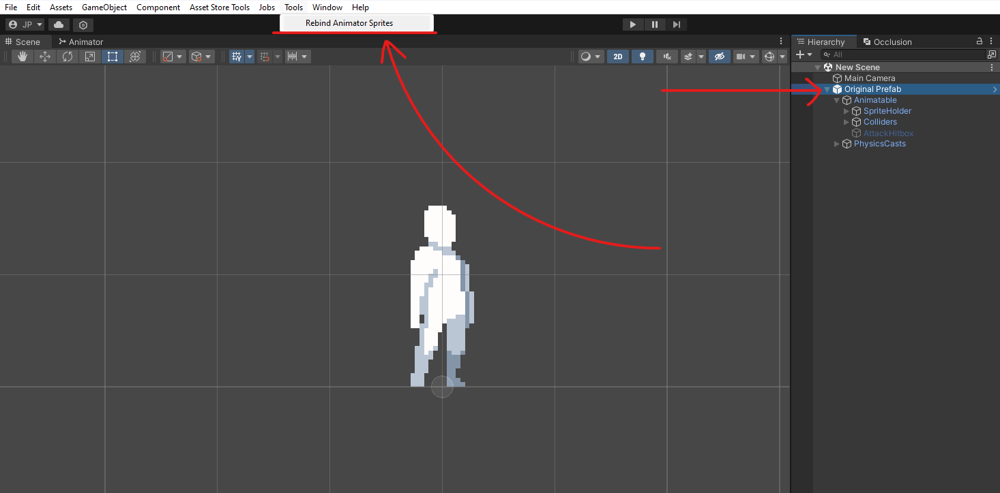

Quickly jump through sections:
- Character Object Setup
- Character Animations Setup
- Character Animations Setup - Single Jump Animation
- Animation Clips Rebind
- Mechanics Setup
Character Object Setup
-
Importing the CharacterTemplate Prefab:
Begin by importing the CharacterTemplate prefab from the provided Getting Started folder. Drag and drop this prefab into your Unity scene to initiate setup. -
Assigning the Default Character Sprite:
Navigate to the SpriteRenderer component within the CharacterTemplate in your scene. This component can be found under CharacterTemplate -> Animatable -> SpriteHolder -> Sprites. Here, select and reference your desired character sprite to serve as the default appearance of your character. You can also scale the Sprites object if you wish to change the size of your character. -
Aligning Colliders:
Ensure that your selected sprite aligns properly with the character's colliders. You can find the colliders under CharacterTemplate -> Animatable -> Colliders -> Horizontal / Vertical. Specifically, focus on the Vertical collider as it should have no offset set in the X axis to ensure proper alignment. The Horizontal collider, on the other hand, generally does not require any special adjustment for alignment, but you may still review it for optimal positioning if needed.
Note: For more detailed information on the colliders and their usage, refer to CharacterEnvironmentalQuery.SetActiveCollider. -
Layers & Tags:
Assign your character to the desired Layer and/or Tag. By default, the assigned layer is set to Ignore Raycast since the asset cannot be destributed with custom layers included. -
Creating and Attaching a Custom Controller:
Create a new class that inherits from the HumanoidController class. Attach this new custom controller to the root object of your character. This will allow you to extend and customize the character's behaviour as needed. -
Saving Your Character Prefab:
Once you've configured the visuals of your character to your satisfaction, save the object as an original prefab. This prefab will serve as the base character object within your project.
Character Animations Setup
Once you've prepared your character object, navigate to the Getting Started folder again, and
locate the CharacterTemplate animator controller. It's recommended to create a duplicate of this animator controller instead of directly editing
it, for easier management and to avoid accidental changes.
To integrate your preferred animations with the animator controller template, simply assign your desired animation clip to each animation state
within the controller. If you wish to exclude a particular animation state, it's recommended to leave it empty rather than removing it altogether.
This helps prevent errors or unintended behaviour.
Additionally, the system supports a double jump animation. If your character jumps while in the air, the animator will transition to the double
jump state.
However, unlike the other states, if you lack a distinct animation for double jumping, do not leave the field empty; instead, reference your
normal jump animation.
Important: Ensure that you reference the newly created animator controller to the animator component field of your character object. You
can find this field within the character object under CharacterTemplate -> Animatable.

Character Animations Setup - Single Jump Animation
The locomotion system and animator are designed to support a series of animations for jumping via a blend tree, including jump-rise, jump-mid, and jump-fall
phases, resulting in the setup of the jump animation being a bit tricky. To configure it, double-click the 'BlendTree_OnAir' animation state to open the blend
tree settings. From there, you can assign the three animations that make up your jump sequence. The blend tree is pre-configured with default threshold values that should work
well with any combination of animations.
Important: If you only have a single animation for jumping, you can use the same animation for all three fields in the blend tree. Removing any of the three animation
references may cause unwanted behaviour.

Animation Clips Rebind
By default, Unity expects an Animator component to be attached to the same object as a Sprite Renderer component. This setup allows animation clips to play
correctly without additional configuration. However, in this case, the Animator component is not on the same object as the Sprite Renderer. Therefore, the animation clips'
paths need to be updated to reflect this change.
To ensure the Animator component correctly locates the Sprite Renderer in the hierarchy, follow these steps using the provided tool for changing animation
clip paths:
- Backup Animation Clips: Make sure to first backup your animation clips of your character.
- Select Character Object: Select your character in the hierarchy window.
- Rebind the Animation Clips: With the character selected, head over to Tools -> Rebind Animator Sprites in the top menu.
Important: Remember to re-run the tool whenever you add new animation clips to the Animator.
With this setup, you will be able to animate other parts of your character, such as the character collider, alongside the main character animations.

Mechanics Setup
With the character object now set up, you have the flexibility to customize it according to your preferences. The provided CharacterTemplate prefab comes
pre-equipped with all components included in the asset, such as the locomotion system and the combat system.
Optional Enhancements:
The prefab is pre-configured with all of the optional components. These include:
- CharacterSlide: Enables sliding mechanics.
- CharacterLedgeGrab: Facilitates ledge-grabbing abilities.
- CharacterDash: Introduces dash maneuvers.
- CharacterCombat: Integrates combat functionalities.
- EntityHealth: Manages the character's health system.
Simplified Configuration:
If you prefer a simpler setup, you can remove the previously mentioned optional components. However, note that the core functionalities remain intact with the following components:
- CharacterMovement: Provides basic movement controls.
- CustomControllerTemplate: Manages humanoid character behaviours. (Replace with your custom controller)
- CharacterEnvironmentalQuery: Facilitates environmental interactions.
Feel free to customize your character by adding or removing components based on your project requirements and desired gameplay mechanics.